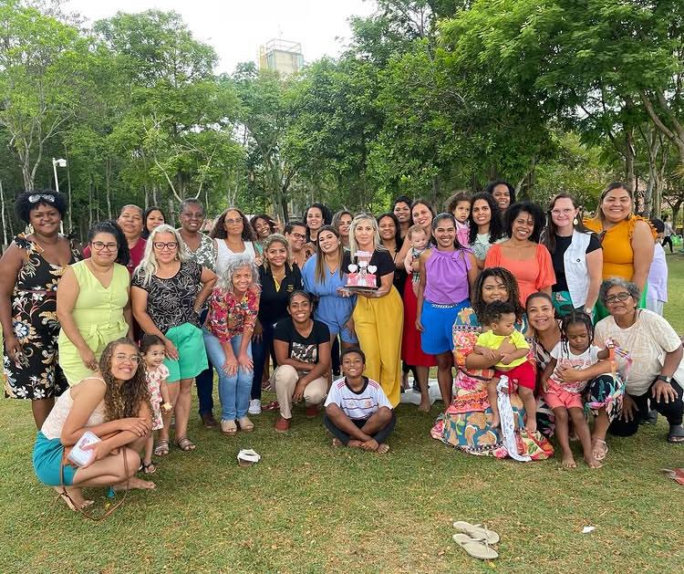

Ministério de Mulheres
Fortalecendo mulheres na fé, encorajando-as a viver seu propósito em Cristo.
O Ministério de Mulheres da Igreja Batista Nova Vida tem como objetivo criar um ambiente de acolhimento e crescimento espiritual para todas as mulheres, de todas as idades e fases da vida. Nossa missão é edificar e encorajar umas às outras, servindo a Deus com nossos dons e talentos.
Acreditamos no poder da comunhão, do estudo da Palavra de Deus e da oração. Nossos encontros abordam temas como maternidade, casamento, vida profissional, fé e o chamado de Deus. Se você busca um lugar para se conectar com outras mulheres e aprofundar seu relacionamento com Deus, este é o seu lugar. Venha fazer parte da nossa família!
Nossos Encontros e Atividades
Comunhão e Crescimento
Momentos de oração e intercessão pela família e pela igreja.
Estudos bíblicos aprofundados para nutrir a fé.
Eventos de comunhão que fortalecem os laços de amizade.
Momentos de adoração e louvor ao nosso Deus.
Nosso Chá da Amizade anual, um tempo de celebração.
Nossa conferência anual, com palestras e workshops.
Retiros espirituais para renovo e descanso na presença de Deus.
Ações sociais e evangelísticas para impactar nossa comunidade.
Programação da Semana
- Toda 4° Quinta-Feira: Culto de Mulheres (19:30h)
- Quarta-feira: Oração (21h as 22h)
Conheça Nossa Líder:
Pastora Rosangela Jager
Líder Sênior